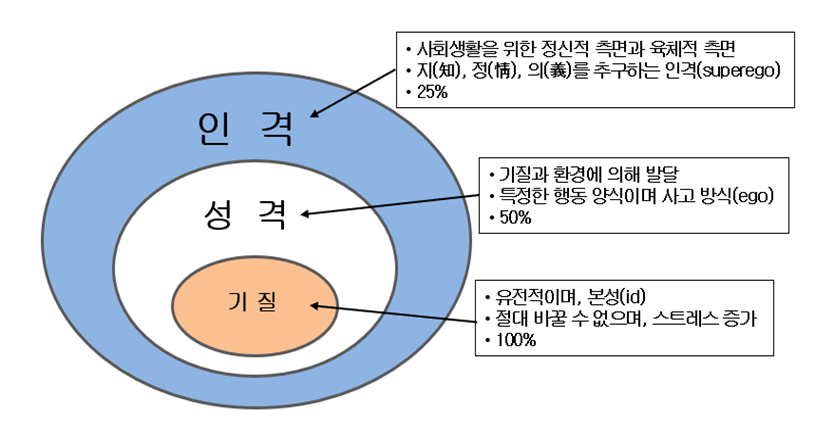
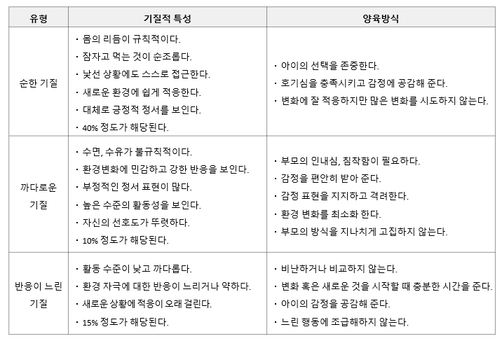

기질, 성격, 인격과의 영역 구분
기질(Temperament)이란 부모로부터 물려받은 유전적인 특성(id)를 말한다. 변화되지 않는 것으로써 사람이 부모로부터 받고 태어난 것이다. 사람은 태어난 직후 각기 다른 기질적 특성을 나타낸다. 기질은 한 사람의 행동을 특징짓는 정서적 표현 및 반응양식으로 이후 성격발달의 기초가 된다. 기질은 사회·정서발달에 직·간접적으로 행동을 특징짓는 기본적인 행동 양식이다. 기질은 절대 바꿀 수 없으며, 바꾸려하면 스트레스가 증가한다.

기질은 한 사람의 행동을 특징짓는 정서적 표현 및 반응양식
어떤 자극에 반응을 나타나는 개인차는 비교적 지속적이다. 생활양식을 보다 더 바람직한 방향으로 나아가도록 성격을 돕는다. 자신과 타인의 기질적 특성과 차이를 이해하고 공감과 배려를 통해 자기 성장을 조화롭게 이루고자 한다.
기질에 영향을 미치는 요인으로 부모의 양육 행동, 사회·문화적인 환경과의 상호작용, 가치관 등이 있다. 기질은 외부 자극에 대해 무엇(What)을 하느냐, 왜(Why) 하느냐가 아니라 어떻게(How) 정서와 신체적 조절과 연관이 된다.
이는 환경에 대한 정서적 반응으로 부모가 자녀의 기질에 맞춰 양육행동을 조절할 때 그 자극에 대한 아이의 반응이 변화를 추구하게 된다.
기질은 생물학적 영향으로 형성되며 쉽게 변하지 않는다
예를 들어, 어렸을 때 소심하고 예민한 아이가 성장 후 다소 활동적이지만 근본적인 특성은 바뀌지 않고 성인까지 지속되는 경향이 있다. 로스바트(Rothbart)는 출생 후 영아 때부터 분명하게 드러나서 아동기, 청소년기 및 성인기의 성격과도 관련이 있다고 주장하며, 기질을 세 영역으로 제안하였다.
첫째, 외향성(extraversion)이란 행복감, 활동성의 정도 그리고 흥미있는 자극을 추구하는 정도를 말한다.
둘째, 부정적 정서(negative affect)란 분노, 공포, 긴장 및 수줍음의 정도와 진정되기 어려운 정도를 말한다.
셋째, 의지적 조절(effortful control)이란 집중할 수 있는 정도와 쉽게 산만해지지 않는 것 그리고 자신의 반응을 억제할 수 있는 정도를 말한다.
기질의 세가지 특성과 부모 양육방식
기질은 ‘순한(easy), 까다로운(difficult), 반응이 느린(slow to warm up)’의 세 기질 유형과 부모 양육방식은 다음과 같다.

기질은 생물학적 특징에 기초한 정서적 자기조절 능력
영아기에 낯가림이 심한 경우 유아기에도 낯선 사람을 두려워하고, 아동기에도 예민하면서 까다로운 성향을 보이기도 한다. 생물학적 특징에 기초한 정서적 반응성 혹은 정서적 자기조절능력에 따라서 개인차가 나타난다. 사회성이 낮고 수줍음이 많은 아이는 이후에도 새로운 대상이나 상황에서 스트레스 반응을 보일 수 있다.
또한, 또래 관계에서 부정적이거나 여러 가지 문제행동의 특징을 알 수 있다. 기질은 언어, 인지, 사회, 정서 등 발달에도 영향을 미친다. 이처럼 기질은 정서와 운동, 외부 자극에 대한 주의 집중과 반응, 그리고 자기조절과 연관이 있다.
최근에는 기질과 또래 상호작용, 기질과 사회적 능력, 기질과 적응력, 기질과 놀이 유형, 기질과 문제행동 간의 관계를 밝히는 다양한 연구가 수행되고 있다.(김현자 외, 2021). 일반적으로 까다로운 기질 특성을 가진 경우, 다른 아이에 비해 문제행동을 더 많이 보이는 경향이 있고, 긍정적인 정서와 사회성, 활동성, 외향성이 높은 아이는 이후 문제행동을 덜 보이는 것으로 밝혀지고 있다.
곽노의, 김경철, 김유미, 박대근(2013). 영유아발달. 양서원.
권순황, 선애순,이형선(2015), 영아발달. 양서원
김영애, 선애순, 정효정(2018). 영유아발달. 양서원
2022.04.11 - [분류 전체보기] - 신생아의 반사 행동 - 뇌간에 의해 통제되는 무의식적 운동
신생아의 반사 행동 - 뇌간에 의해 통제되는 무의식적 운동
신생아의 반사(reflex)행동은 생존하는데 필수적인 요건이다. 반사행동은 발달단계에서 자신을 보호하고 자발적인 신체의 기능 향상과 직접적인 관련이 있다. 특히, 반사행동은 뇌간(brainstem)에
think-sis.co.kr